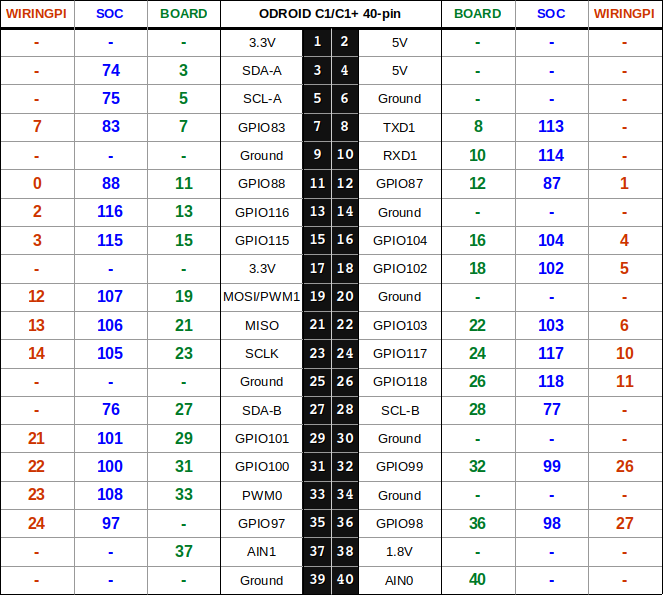
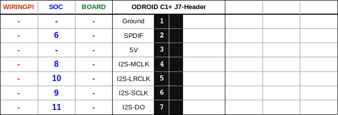
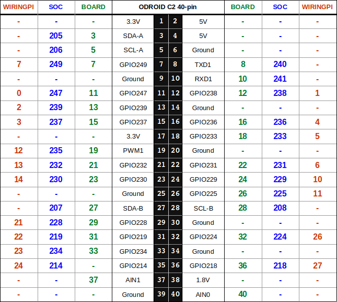

Odroid¶
Support for several Odroid boards has been added to the GPIO module.
Odroid C1 (untested)
Odroid C1+ (untested)
Odroid XU3 (untested)
Odroid XU4 (untested)
Odroid N2 (untested)
If you encounter any problems or errors, please open a new issue and post your logs.
Don’t forget to install the requirements
pip3 install -r requirements/gpio-odroid.txt
Warning
Pin change interrupts will not be registered when using SOC pin
numbering because there is a bug in HardKernel’s wiringpi-python port.
You can use interrupts in BOARD or WIRINGPI numbering schemes
without issue.
Install WiringPi¶
Installing Odroid WiringPi requires cloning and building manually:
cd /opt
git clone https://github.com/hardkernel/wiringPi
cd wiringPi
./build
cd /opt/mqttany
Odroid C1/C1+¶
 Odroid C2¶
Odroid XU3/XU4¶
Warning
Without an XU3 to test I cannot identify whether you have an XU3 or XU4 board. The XU3 model does not have the CON11 header. You must not attempt to use any of the GPIO pins on that header if you have an XU3.
Note
The BOARD pin numbering for the XU3 and XU4 is based on the Shifter
Shield 40-pin connector and not the CON10 and CON11 headers.